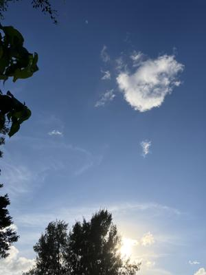
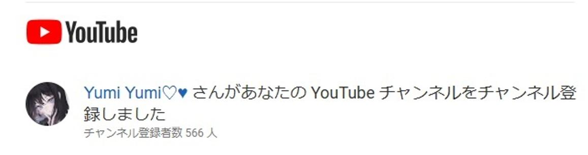

うるがいの話 ある日
最新: DTMer【うるがいの話 ある日】とは 一日だけのプログです
『うるがいの話』の最新一日だけのプログで、通信料が少なく経済的だ。カニの画像をクリックすると全ての日付が載る『うるがいの話』サイトを表示します
|
|
【うるがいの話】 うるがい(ｳﾙｶﾞｲ urugai)とは、『もずくがに』の名前でとても大きくなります。 |
|---|---|
|
|
【カミマヤーの話】 猫のことを方言でマヤーといいます。カミマヤー（kamimayaa）とは、神の猫のことです。 |
|
【たながぁの音楽】 たながぁ（ﾀﾅｶﾞｰ tanagaa）とは手長えびのことで、何種類かあり大きいのは車 エビぐらいになります。 |

|
【ぶながぁの話】 ぶながぁ(ﾌﾞﾅｶﾞｰ bunagaa)とは、赤い髪の毛、赤い身体、そして身長は１ｍ２０ｃｍ ぐらい、川の蟹を食べているの目撃された。場所は沖縄県国頭郡大宜味村のと ある村僕の隣近所に住んでいる爺さんから、聞いた話です。 |
|
|
【ギーマの話】 ギーマ(giima)とは、山原の里山に咲くスズランに似た、 花を付けます。実は食べられます、 気が付くと口の周りが紫になっています。 |
2025年12月08日 (月）DTMer
15:33

2025年12月08日 (月) DTMer
15:33
『ＤＴＭ関連の本を探したくて、音楽の階へ行きましたけど無か
ったです』と本屋の店員さんに尋ねると、パソコンで検索する、
ウーンとなかなか出ないようだ、『あ、ＴＴＭでなくＤＴＭ！、
デスクトップミュージックの・・』、あ、パソコンの２番目にあ
ります。ホー、なるほどパソコンなんだ。実物の本を見てＤＴＭ
関連の本２冊を選ぶ、先に『歌謡曲すべて下（５，０８２円）』
と合わせて９，１３０円！！。ま、イイカ。
「DTMer」は、
「ディー・ティー・エマー」と読みます。これはパソコンなどの
機材を使って音楽を制作する人を指す和製英語です。
うーん、エマー・・ね。
小乗チャンネルのユーチューブ動画へ、凄いチャンネル登録数の
人がチャンネル登録した。

なお、洋楽、クラシックなんでもアリアリの大乗チャンネル登録
者に最近の比較です、小乗チャンネルが凄い人達と分かる。しか
し、写真のチャンネル、本物かな？。

したは、ジュンク堂書店のクリスマスツリー

お！、苦労して作成したユーチューブ動画が完成した、長いっす
ハッピー・クリスマス（戦争は終った）
（Happy Xmas (War Is Over)）John & Yoko 三線 ３分３３秒
https://youtu.be/gp61aJouydk